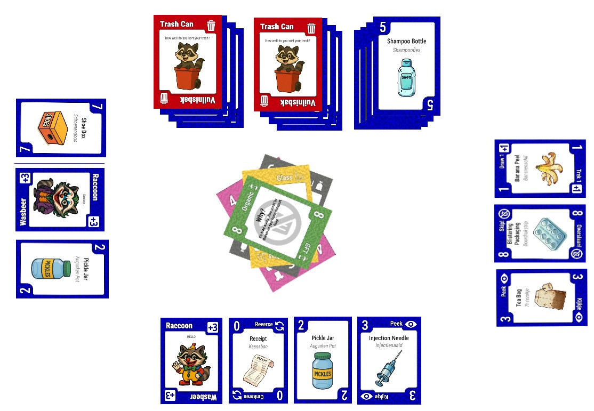
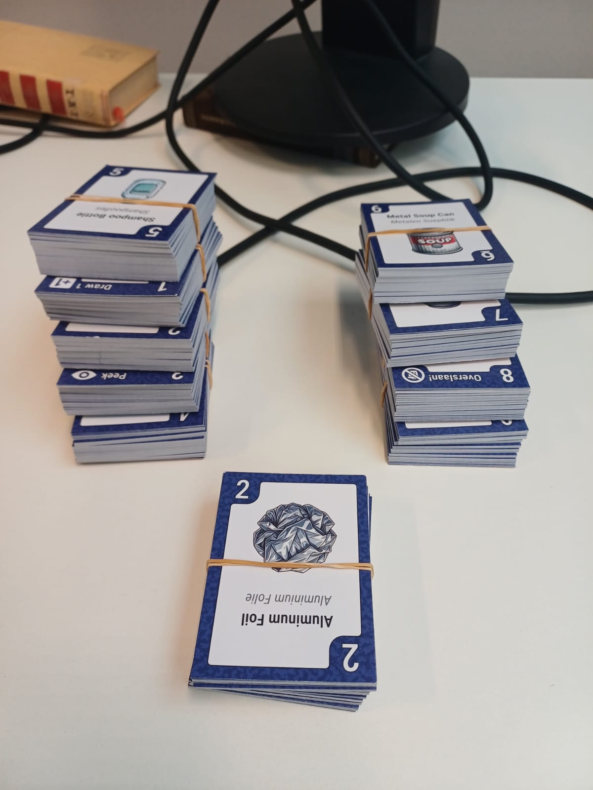
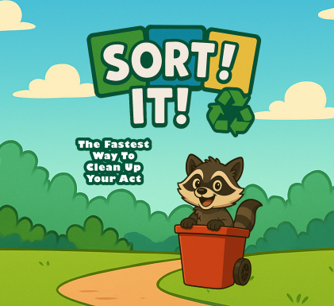

Trash Sorting Card Game
For a group project, I co-designed and developed a physical card game called Sort It!, a recycling-themed card game built around the waste sorting categories used in Enschede, the Netherlands. The game supports multiple players and plays similarly to Uno, where players match cards by trash type or number and must correctly name the category aloud before playing. It was designed to be both engaging and educational, teaching real-world recycling habits practiced within Netherlands through gameplay.
The game features 158 cards across seven trash types, including special action cards and wild cards with unique mechanics like Draw 1, Skip, Reverse, Peek, Transform, and Raccoon. A Trash Can card system adds a layer of strategy by unlocking additional discard piles as the game progresses. The manual, card designs, and visual identity were all produced as part of the project by the team.


